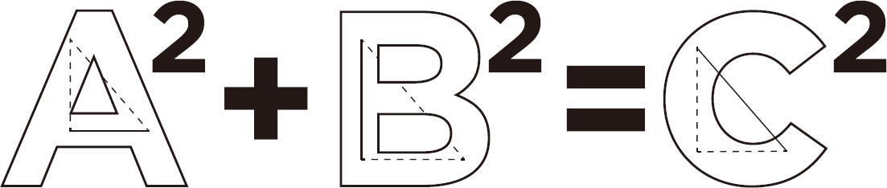
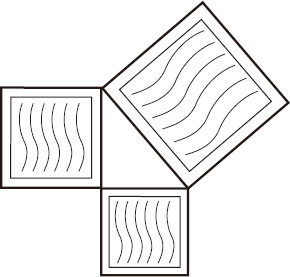
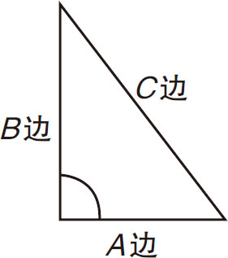
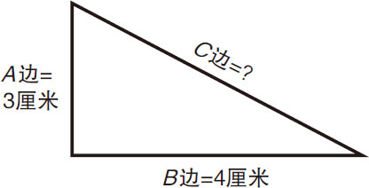
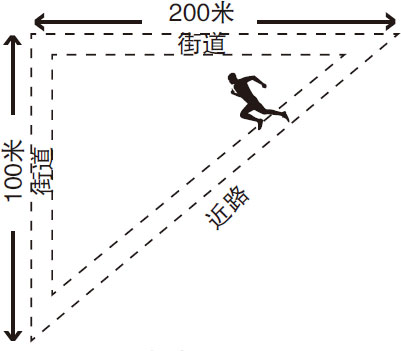
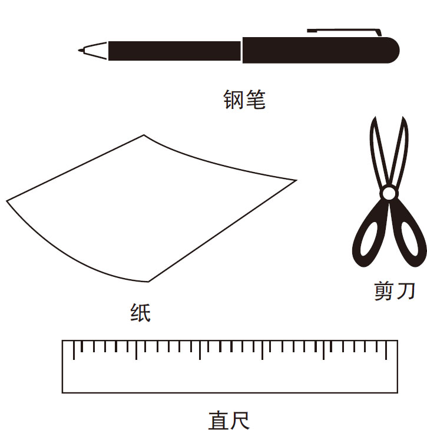
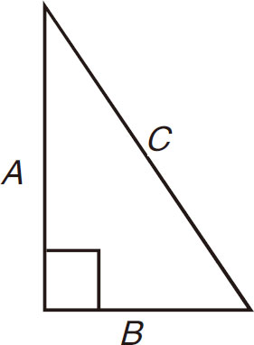
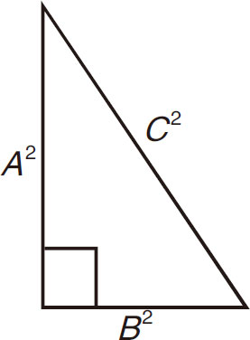

勾股定理是一个基本的几何定理，指直角三角形的斜边的平方（直角相对的边）等于两条直角边的平方和。
这个公式是这样的：A 2 ＋B 2 ＝C 2 ，见图3-14。

图3-14
图3-15和图3-16显示了“A ”“B ”和“C ”的“平方”的物理版本。

图3-15

图3-16
在图3-17中显示的三角形，A 边是3厘米，B 边是4厘米。

图3-17
A 边的平方是9，B 边的平方是16。两边的总数是25。25的平方根是5。所以，侧边C 的边长是5厘米。
用勾股定理，可以快速计算出路径长度，如图3-18所示。

图3-18
使用普通的纸就可以很容易地证明勾股定理（A 2 ＋B 2 ＝C 2 ），通过动手演示，可以加深你对定理的理解和记忆。
需要准备的东西：
►纸
►剪刀
►钢笔
►直尺

制作
在纸上画一个直角三角形，如图3-19所示。对两个直角边进行测量，并计算它们的平方和，如图3-20所示。

图3-19
勾股定理
（适用于直角三角形）A
2
＋B
2
＝C
2

图3-20
三角形边的平方
已知A
＝4，B
＝3，根据公式A
2
＋B
2
＝C
2
。
可得C
2
＝25厘米，所以C
＝5，用直尺测量C
的长度，看定理是否正确